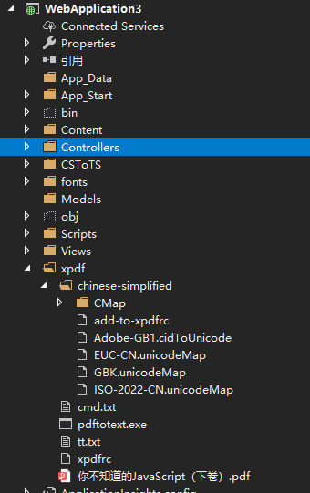

最近项目需要实现根据关键字搜索pdf内容，实现思路就是提取pdf文本，然后进行索引。
工具上选择：
IText 4.16之后采用agpl License，不能用作商用，而且转换中文会有乱码问题,
pdfsharp 采用MIT License，权限上没有问题，但是转换中文也会有乱码,
最后决定采用xpdf.
官网地址：https://www.xpdfreader.com/download.html
需要下载对应的xpdf包，本人采用的windows x64 版本
此外还要下载中文字符集包：简体中文字符集
包准备工作如下：
将xpdf文件夹copy到项目合适位置实现功能，这里只演示单个文件的转换工作，本人是将xpdf访问asp.mvc启动工程的根目录下进行测试的(文件路径有空格一定要加双引号)
1 public ActionResult Search(string keyword)
2 {
3 var rooPath = Server.MapPath("~/");
4 ProcessStartInfo startInfo = new ProcessStartInfo
5 {
6 UseShellExecute = false,
7 WindowStyle = ProcessWindowStyle.Normal,
8 RedirectStandardInput = true,
9 RedirectStandardOutput = true,
10 RedirectStandardError = true,
11 CreateNoWindow = false,
12 WorkingDirectory = string.Format("{0}xpdf", rooPath),
13 //FileName = string.Format("{0}xpdf\\pdftotext.exe", rooPath)
14 FileName ="cmd.exe"
15 };
16 //pdftotext.exe -layout -enc GBK 你不知道的JavaScript（下卷）.pdf
17 var arguments = string.Format("/C pdftotext.exe -layout -enc GBK \"{1}\" \"{2}\"", rooPath, rooPath + @"xpdf\1.pdf", rooPath + @"xpdf\JavaScript.txt");
18 //var arguments = string.Format(@"{0}1.pdf", rooPath);
19 startInfo.Arguments = arguments;
20 var ss = string.Empty;
21
22 using (Process process = Process.Start(startInfo))
23 {
24
25 process.OutputDataReceived += new DataReceivedEventHandler((object sender, DataReceivedEventArgs e) =>
26 {
27 ss += e.Data;
28 });
29 process.BeginOutputReadLine();
30 using (var error = process.StandardError)
31 {
32 ss += error.ReadToEnd();
33 }
34 //等待退出
35 process.WaitForExit();
36 }
37
38 return Json(ss, JsonRequestBehavior.AllowGet);
39 }error 可能会有报字体的错误，但不影响转换，可以忽略：
Syntax Error: Unknown character collection 'DYNA-HK1'
Syntax Error: Unknown character collection 'DYNA-HK1'
下面再附上工程目录：
